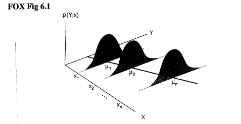
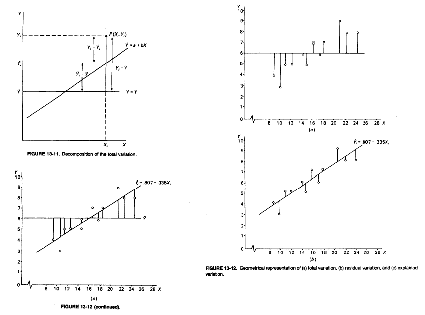
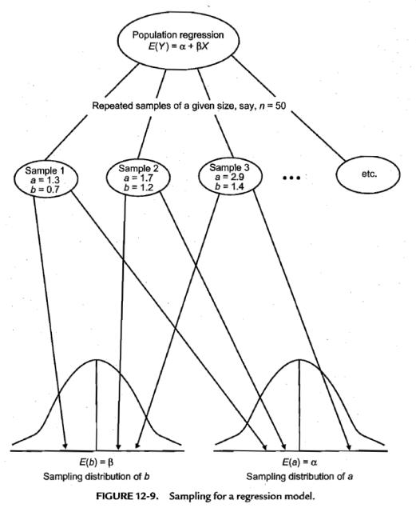
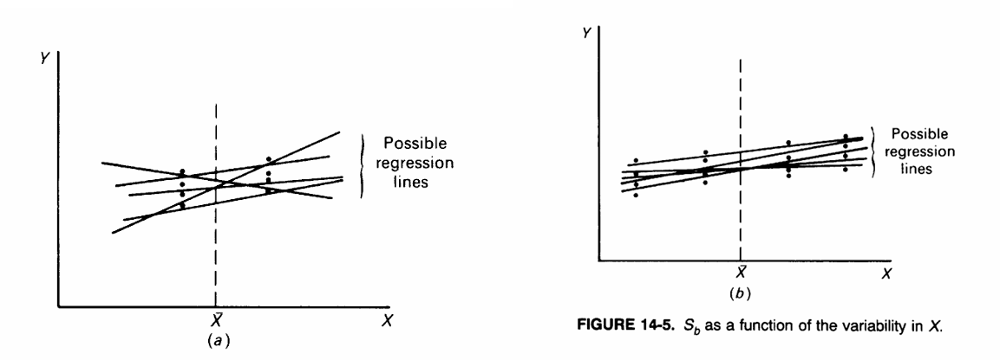
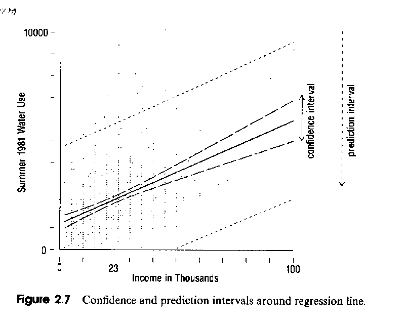
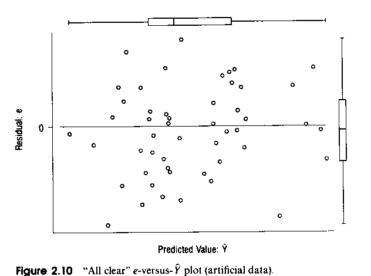
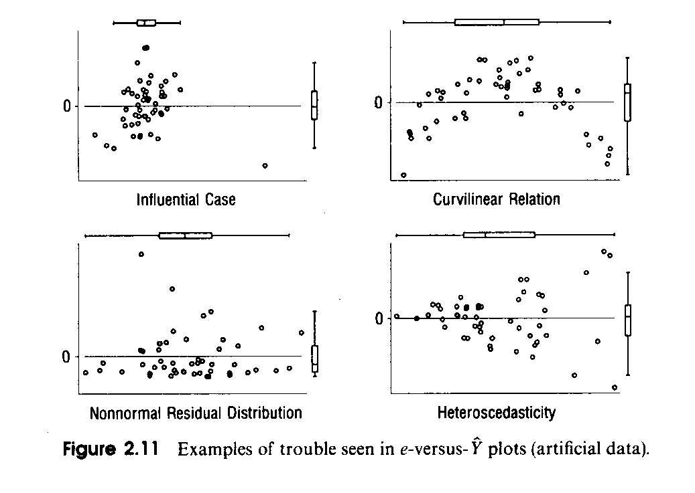
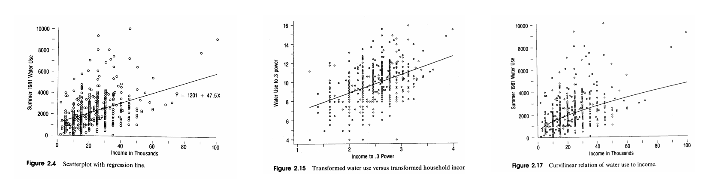
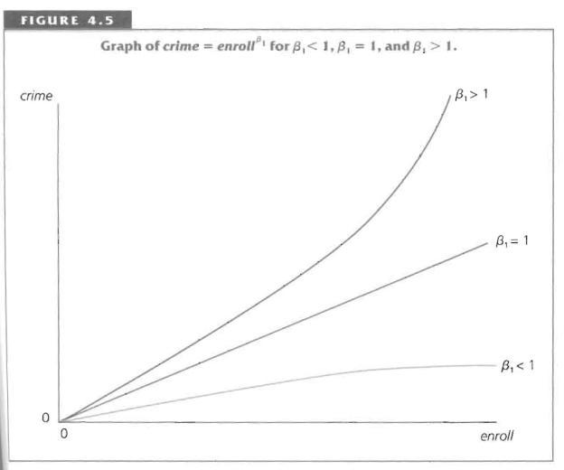
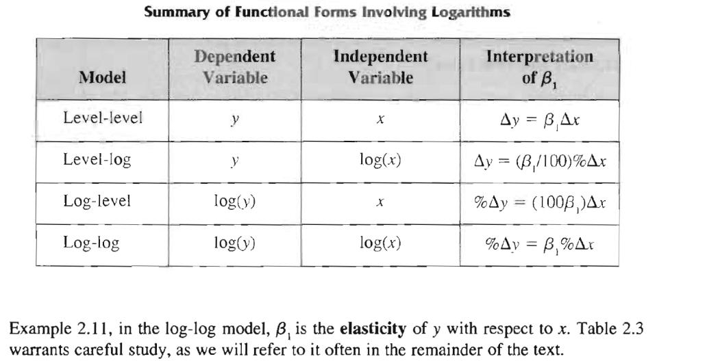

Week02: Hamilton Chapter 2 - Bivariate Regression Analysis
1 Regression and Causality
Def. causality: The change in a cause induces in a predictable manner a change in an effect.
The role of endogenous (effect) and exogenous (cause) variable depends on the context. E.g.: The relationship between income and education can either be:
- [a] the parent’s income determines the child’s education
- [b] A person’s earlier education level determines a person’s later income
Time ordering: The cause \(X\) precedes the effect \(Y\). This is the closest we get in empirical research to causality.
- Note: in the income-education example the exogenous variable always precedes the endogenous variable.
Co-variation: The variables \(X\) and \(Y\) jointly covary in a random but systematic manner (not causality).
- No statement can be made about the influence that one variable has on the variation of another variable. Thus, there is no cause and effect relationship.
- Both variables seem to just correlate in their variation for what-ever reasons.
Spurious relationships: The empirical covariation between \(X\) and \(Y\) can be induced by their joint relationship to another variable \(Z\) (or a set of variables).
The variable \(Z\) is called confounder.
Bivariate regression analysis cannot control for confounding effects because only the two variables \(X\) and \(Y\) define the regression model. We will see in Chapter 3 that multiple regression models can control for confounding effects.
Theory based research (or confirmatory research) makes predictive statements about the [a] strength, [b] direction, [c] shape (linear or nonlinear) and [d] conditional distributions \(p(Y|X)\) of \(Y\).
Regression traces the conditional distributions of \(Y\) given a particular value of \(X\) by means of the conditional expectation.
FOX Fig. 6.1 assumes positive linearity and equal conditional distributions. We get the conditional expectations \(\mu_{y_i|x_{i1}} \equiv E(y_i | x_{i1}) = \beta_0 + \beta_1 \cdot x_{i1}\)

1.1 Notational Considerations
For the \(i\)-th observation the population model with an underlying data generating process becomes the regression model \(y_i = \beta_0 + \beta_1 \cdot x_{i1} + \varepsilon_i\).
None of the population parameters \(\beta_0\) and \(\beta_1\) nor the error term \(\varepsilon_i\) are directly observable using an empirical sample.
The parameter \(\beta_0\) is called the intercept and the parameter \(\beta_1\) is the slope.
The parameters \(\beta_0\) and \(\beta_1\) are not indexed by the individual observations \(i\). Thus, they are constant across all observations.
In the population the error term \(\varepsilon_i\), also called disturbance, is directly associated to the \(i\)-th observation.
The predicted value of the estimated model is \(\hat{y}_i = b_0 + b_1 \cdot x_{i1}\) with the estimated residual \(e_i = y_i - \hat{y}_i\).
- Some people also write \(\hat{\beta}_0\) and \(\hat{\beta}_1\) for the estimated parameters and \(\hat{\varepsilon}_i\) for the residuals.
- Hamilton uses the symbol \(K\) for the number of estimated parameters including the currently invisible intercept. Thus, for bivariate regression analysis the number of estimated parameters is \(K = 2\).
1.2 Basic Interpretation
A sample of just two data-points determines exactly a line, which is characterized by two parameters. Consequently, we will lose two degrees of freedom when performing bivariate regression analysis.
The linear regression model separates
the conditional expectations (conditional on the observation \(x_{i1}\)) \(\mu_{y_i|x_{i1}} \equiv E(y_i | x_{i1}) = \beta_0 + \beta_1 \cdot x_{i1}\) (systematic component)
from the unobserved disturbances \(\varepsilon_i\) (random component) that are unique for each observation.
The disturbances vary around the systematic component. The set of \(n\) disturbances has only \(n - K\) degrees of freedom.
Gaining further understanding of any potentially inherent pattern in the residuals (unexplained part) enhances our knowledge.
\(\Rightarrow\) For this reason, extensive residual analysis is part of regression analysis (see Chapter 4).
2 Key Assumptions of Regression Analysis
Key assumptions:
The relationship between the independent variable and the dependent variable is linear (or can be transformed to linearity).
The independent variable \(X\) is fixed (that is, it is deterministic variables and not influenced by random effects).
Note: should it for some reason be influenced by randomness, then we need at least assume that it is uncorrelated with the population disturbances. There is a strong risk of obtaining biased estimates for the regression coefficients. See instrumental variable estimation later.
Disturbances at any level of \(x_i\) have identical distributions, with zero mean and constant variance.
Disturbances are in general assumed to be independent (uncorrelated) among each other.
The independence and identical distribution assumption is abbreviated by statement that the disturbances are i.i.d. (independently identically distributed)
The additional i.i.d. normality assumption of the disturbances allows statistical significance testing of the estimated regression model in small samples.
Notes:
Arguing purely statistically, only the disturbances are required to be normal i.i.d. Neither \(Y\) nor \(X\) need to follow a normal distribution.
However: A joint normal distribution of the variables \(X\) and \(Y\) is highly desirable because it guarantees linearity of their relationship and a balanced distribution of all data points in the scatterplot; thus, minimizing any impact of potential outliers and counteracting potential heteroscedasticity.
3 Ordinary Least Squares Estimation and Variance Decomposition
What is the inter-pretation of the intercept and the slope parameters?
The method of ordinary least squares fits a straight line through the scatterplot point cloud that minimizes the sum of the squared regression residuals.
As long as the model has an intercept the regression line always goes through means of \(X\) and \(Y\), i.e., the point \((\bar{x}, \bar{y})\) will be on the regression line.

- Definition of variance terms: Total Sum of Squares (TSS), Residual Sum of Squares (RSS) and Explained Sum of Squares (ESS)
\[TSS = \sum_{i=1}^{n} (y_i - \bar{y})^2 \text{ with } df = n - 1\]
\[RSS = \sum_{i=1}^{n} (y_i - \hat{y}_i)^2 \text{ with } df = n - K\]
\[ESS = \sum_{i=1}^{n} (\hat{y}_i - \bar{y})^2 \text{ with } df = K - 1\]
The validity of decomposition \(TSS = ESS + RSS\) relies on the fact that the product \(\sum(y_i - \hat{y}_i) \cdot (\hat{y}_i - \bar{y}) = 0\), which can be easily shown later using matrix algebra.
Key consequence: \(Cov(\hat{y}, e) = Cov(b_0 + b_1 \cdot X, e) = b_1 \cdot \underbrace{Cov(X, e)}_{=0} = 0\)
Therefore, the incorporated independent variables cannot explain any remaining variation in the regression residuals.
That is, the independent variable has exhausted all relevant information in the regression model.
3.1 Estimation of Slope and Intercept
- In ordinary least squares regression, we want to minimize the sum of squared residuals RSS with the residuals being defined by \(e_i = y_i - \underbrace{(b_0 + b_1 \cdot x_{i1})}_{\hat{y}_i}\) (see HAM p 33), that is,
\[\min_{b_0, b_1} RSS = \min_{b_0, b_1} \sum (y_i - \underbrace{(b_0 + b_1 \cdot x_{i})}_{=\hat{y}_i})^2\]
- Minimizing this function is done by setting its first derivatives equal to zero and solving for the unknown parameters \(b_0\) and \(b_1\) leads to:
\[\frac{\partial RSS}{\partial b_0} = -\sum y_i + nb_0 + b_1 \sum x_{i1} \equiv 0\]
\[\frac{\partial RSS}{\partial b_1} = -\sum x_i \cdot y_i + b_0 \sum x_{i1} + b_1 \sum x_{i1}^2 \equiv 0\]
- The first equation shows that the regression line must go through the means \((\bar{x}, \bar{y})\) of the independent and the dependent variables because,
\[-\sum y_i + nb_0 + b_1 \sum x_{i1} \equiv 0\] \[\Rightarrow \sum y_i = nb_0 + b_1 \sum x_{i1} \quad | \div n\] \[\Rightarrow \bar{y} = b_0 + b_1 \cdot \bar{x}\]
Therefore, \(b_0 = \bar{y} - b_1 \cdot \bar{x}\) and the sum of the regression residuals is zero, i.e., \(\sum e_i = 0\).
- Inserting the means expression for \(b_0\) into \(\frac{\partial RSS}{\partial b_1} = 0\) and solving for \(b_1\) gives
\[b_1 = \frac{n \cdot \sum y_i \cdot x_{i1} - \sum x_{i1} \cdot \sum y_i}{n \cdot \sum x_{i1}^2 - (\sum x_{i1})^2}\]
- Equivalent expressions for the slope parameter \(b_1\) in bivariate regression are
\[b_1 = \frac{\sum_{i=1}^{n} (y_i - \bar{y}) \cdot (x_i - \bar{x})}{\sum_{i=1}^{n} (x_i - \bar{x})^2}\]
\[= \frac{s_{YX}}{s_X^2} = r \cdot \frac{s_Y}{s_X}\]
or \(b_1 = \frac{Cov[Y,X]}{Var[X]}\) (see Hamiliton p 294).
Question: What would the slope be if we regress \(X\) on \(Y\). Answer: \(b_{X|Y} = r \cdot \frac{s_X}{s_Y}\) or equivalently \(\frac{Cov[Y,X]}{Var[Y]}\).
3.2 \(R^2\) and Adjusted \(R_{adj}^2\) (REVIEW, SKIPPED)
- The goodness of fit measure (proportion of explained variance relative to the total variance) is defined by
\[R^2 \equiv \frac{ESS}{TSS} = 1 - \frac{RSS}{TSS}\]
- The adjusted goodness of fit takes the degrees of freedom into account because. Note, the more variables are enter into the regression equation, the better the fit of the model will be or at least stay the same (recall the perfect fit of the regression through two points)
\[R_{adj}^2 \equiv 1 - \frac{RSS/(n - K)}{TSS/(n - 1)}\]
When \(n\) is large relative to \(K\) then the difference between the adjusted and the ordinary \(R^2\) is negligible.
4 Statistical Inference on the Unknown Regression Parameters
Question: Why are estimated regression parameters \(b_0\) and \(b_1\) random variables that have their own distribution?
Answer: Repeated samples from a population will yield different sets of observations.
Thus, the estimated regression parameters will differ from sample to sample and therefore will have a distribution.

Assuming i.i.d. disturbances \(\varepsilon_i\), then the estimated regression parameters \(b_0\) and \(b_1\) will be asymptotically normal distributed with \(b_0 \sim \mathcal{N}(\beta_0, \sigma_{b_0}^2)\) and \(b_1 \sim \mathcal{N}(\beta_1, \sigma_{b_1}^2)\) due to the central limit theorem. Thus, if other assumptions are satisfied, the estimated parameters are unbiased with \(E(b_0) = \beta_0\) and \(E(b_1) = \beta_1\).
The square roots of the estimated parameter variances \(\hat{\sigma}_{b_0}^2\) and \(\hat{\sigma}_{b_1}^2\) are called standard errors of the estimated regression coefficients.
Several equations make use of the residual standard deviation \(s_e = \sqrt{\frac{RSS}{n - K}}\). It is also called the Root Mean Square Error.
One can show that the standard errors of the regression parameters are
\[\sqrt{Var(b_1)} = SE_{b_1} = \frac{s_e}{\sqrt{TSS_X}} \text{ and } \sqrt{Var(b_0)} = SE_{b_0} = s_e \cdot \sqrt{\frac{1}{n} + \frac{\bar{X}^2}{TSS_X}} \text{ with } TSS_X = \sum_{i=1}^{n} (X_i - \bar{X})^2\]
- Both standard errors depend on the spread \(TSS_X\) of the independent variable \(X\). Notice that with increasing spread \(TSS_X\) the a regression vary less and thus becomes more precise (i.e., they have smaller standard errors).

Low uncertainty and unbiasedness of any estimates are desirable properties.
Since we work with estimates of standard errors, the distribution of the test statistic \(t = \frac{b_1 - \beta_1}{SE_{b_1}}\) follows a t-distribution with \(df = n - K\) rather than a standard normal distribution. This t-statistic resembles a z-transformed variable around a hypothetical population value \(\beta_1\).
If the exogenous variable \(X\) does not explain any variation in the endogenous variable \(Y\) then the slope estimate \(b_1\) does not differ significantly from zero.
Therefore, the null hypothesis in this case becomes \(H_0: \beta_1 = 0\) and the alternative hypothesis \(H_1: \beta_1 \neq 0\)
Consequently, the test statistic reduces to \(t_{obs} = (b_1 - 0) / SE_{b_1} = b_1 / SE_{b_1}\)
There are scenarios where a different base-line level, such as \(H_0: \beta_1 = 1\) against \(H_1: \beta_1 \neq 1\), becomes relevant. See the later discussion of elasticity.
An alternative test statistic is based on the F-statistics. More about this in the multiple regression chapter.
If a theory suggests that the regression parameter is expected to be positive (or negative, respectively), then a one-sided test becomes appropriate, that is
- \(H_0: \beta_1 \leq 0\) against \(H_1: \beta_1 > 0\) for a positivity assumption, or
- \(H_0: \beta_1 \geq 0\) against \(H_1: \beta_1 < 0\) for a negativity assumption.
- In those cases, as long as the sign of estimated regression coefficient points towards the direction of the alternative hypothesis, compared to the reported prob-value by the software (it is based a two-sided test scenario) the true prob-value is only half as large because just a one-tailed probability is used.
5 Confidence Intervals
- A \(1 - \alpha\) confidence interval, e.g., 95% interval, around the hypothetical population parameter \(\beta_1\) is given by
\[\Pr(t_{\alpha/2, df}^{-} < \frac{b_1 - \beta_1}{SE_{b_1}} < t_{1-\alpha/2, df}^{+}) = 1 - \alpha\]
\[\Rightarrow \Pr(\underbrace{b_1 - SE_{b_1} \cdot t_{1-\alpha/2, df}}_{+} < \beta_1 < \underbrace{b_1 - SE_{b_1} \cdot t_{\alpha/2, df}}_{-}) = 1 - \alpha\]
If we assume \(H_0: \beta_1 = 0\) is true then the confidence interval covers the value zero, that is,
\[0 \in [b_1 - SE_{b_1} \cdot t_{1-\alpha/2, df}, b_1 + SE_{b_1} \cdot t_{1-\alpha/2, df}]\]
Thus the zero hypothesis cannot be rejected at the significance level \(\alpha\), because the estimate regression parameter \(b_1\) is not statistically different from zero.
There are two confidence intervals associated with the predictions of the dependent variable \(\hat{Y}_i\): [a] one for the estimated regression line and [b] another for an individual point prediction \(\hat{Y}_i\)
For the regression line (book calls it mean expected value) we need to account simultaneously for the sampling variation in the intercept \(b_0\) and slope \(b_1\).
In this case the variation of the predicted line \(\hat{Y}_{i,line}\) around the true population line at a given value \(X_i\) has the standard error of
\[SE_{\hat{Y}_{i,line}} = s_e \sqrt{\frac{1}{n} + \frac{(X_i - \bar{X})^2}{TSS_X}}\]
[b] For an individual point prediction of \(Y_{i,point}\) (book calls it an individual case’s Y value) we need to account not only for the sampling variation of the estimated regression parameters but also for the variation of the individual observation at a given value \(X_i\), that is, the potential disturbance \(\varepsilon_i\).
Therefore, the standard error increases by one unit of the residual standard deviation:
\[SE_{\hat{Y}_{i,point}} = s_e \sqrt{1 + \frac{1}{n} + \frac{(X_i - \bar{X})^2}{TSS_X}}\]

The term \((X_i - \bar{X})^2\) in both equations signifies that the prediction standard errors will increase the further we move away from the mean \(\bar{X}\).
Furthermore, the larger the sample size \(n\) gets the narrower the confidence intervals will become, because \(TSS_X\) in the denominator is increasing while \(1/n\) is shrinking.
6 Regression through the Origin
Regression through the origin should only be considered if there are strong theoretical reasons to assume that the intercept \(\beta_0 = 0\).
A test outcome, that indicates that the intercept is zero, does not justify dropping the intercept.
In R we can suppress the intercept with the statement
model.lm <- lm(y~-1+x), where the negative term-1denotes to drop the interceptMost of the standard test statistics of regression analysis become invalid if we suppress the intercept. For instance:
Without an intercept the sum of the regression residuals will not necessarily remain zero, that is, \(0 \neq \sum_{i=1}^{n} e_i\)
The goodness of fit measure \(R^2\) is no longer defined because it is based on variations around the mean.
7 Problems Associated with Bivariate Regression Analysis
Omitted additional relevant variable. The estimate regression parameters become biased (on average, over many samples from the population, not identical to the population parameter).
Non-linear relationship. Mis-specified model. Perhaps the residuals indicate autocorrelation.
Non-constant disturbance variance (heteroscedasticity). The variance of the regression residuals changes systematically with either [a] an independent variable or [b] some other external factors currently not considered in the regression model.
Autocorrelation. The disturbances are no longer independent.
Non-normal disturbances. Test statistics, that are based on the normal assumptions, become unreliable in small samples.
Influential cases. Regression analysis is not resistant to outliers.
Large, squared residuals \(\hat{e}_i^2 = (y_i - \hat{y}_i)^2\) have a strong impact on the ordinary least squares estimation (a squared large distance becomes even larger).

Some of these problems can be identified by an inspection of the regression residuals.
Recall: the residuals \(e_i\) are uncorrelated with the predicted values \(\hat{Y}_i = b_0 + b_1 \cdot X_i\). The same holds for the exogenous variable \(X_i\).
Therefore, a scatterplot of the residuals against either the predicted value or an independent variable, which already is included in the model, should not show a systematic pattern.
Some violations are indicated in the plots on the right.

8 Transformations of the Endogenous and Exogenous Variables (Following Hamilton’s Naïve Approach)
A scatterplot of \(Y \sim X\) or the analysis of the regression residuals may indicate that a transformation of the dependent and/or the independent variables are required.
- to fix influential cases by pulling them into the population
- to fix a curvilinear relationship and making the relationship linear
- to bring the distribution of the regression residuals closer to a symmetric distribution and/or desirable the normal distribution.
- to stabilize the variability of the regression residuals by a transformation of the dependent variable.
This requires experimentation. Both variables could be simultaneously transformed, that is, \(Y_i^* = f(Y_i)\) and \(X_i^* = g(X_i)\) and the regression residuals must be evaluated until a set of transformations is found, for which the underlying regression assumptions are not violated.
The functions for the dependent and independent variable \(f(\cdot)\) and \(g(\cdot)\), respectively, can be different, e.g., have different \(\lambda\)-parameters.
In the transformed model predictions can be made \(\hat{Y}_i^* = b_0 + b_1 \cdot X_i^*\)
The inverse function is applied on the predicted values \(\hat{Y}_i = f^{-1}(\hat{Y}_i^*)\) and the curvilinear relationship between \(\hat{Y}_i\) and \(X_i\) can be graphed in the original measurement units.
For the Box-Cox transformation \(Z^* = \frac{Z^\lambda - 1}{\lambda}\) its inverse transformation is \(Z = (Z^* \cdot \lambda + 1)^{1/\lambda}\).

9 Statistically Rigorous Transformation Approach
The naïve approach exhibits two problems:
The objective is not that the dependent variable is symmetrically or normally distributed, but rather that the regression residuals are symmetrically or normal distributed.
The predicted values after the inverse transformation back into the original measurement units become conditional medians rather than conditional expectations \(\mu_{y_i|x_{i1}} \equiv E(y_i | x_{i1})\)
To overcome these problems the best approach is
Transform all independent variable to become approximately symmetry. This enhances the linearity of the model \(\Rightarrow X^* = g(X)\).
Find a transformation \(f(\cdot)\) for the dependent variable \(Y\) so that the regression residuals become approximately normal distributed \(\Rightarrow e^* = f(Y) - b_0^* + b_1^* \cdot X^*\) with \(e \sim N(0, \sigma^2)\).
Predict \(\widehat{f(Y)} = b_0^* + b_1^* \cdot X^*\) in the transformed system. Note: all model assumptions should be satisfied in the transformed system.
Map \(\widehat{f(Y)}\) back into the original measurement units either by the inverse transformation
- \(f^{-1}(\widehat{f(Y)})\) for the predicted median \(\hat{Y}_{median}\), or
- \(f_{corrected}^{-1}(\widehat{f(Y)})\) for the predicted expected value \(\mu_{y_i|x_{i1}} \equiv E(y_i | x_{i1})\)
The script BOXCOXBIVARIATEREGRESSION.R outlines the procedure.
The same logic can be applied in multiple regression models with more than one independent variable.
10 Elasticity
- To estimate a non-linear exponential model
\[y = \exp(b_0) \cdot x^{b_1} \cdot \exp(\varepsilon)\]
by linear regression the model can be transformed into the log-log form. This gives the transformed model of the form in the variables \(Y\) and \(X\):
\[\ln(y) = b_0 + b_1 \cdot \ln(x) + \varepsilon\]
- In this model the estimated regression coefficient \(b_1\) is interpreted as a relative rate of change (i.e., percentage change) at a given value \(y_0\) and \(x_0\)
\[b_1 = \frac{\%\Delta y}{\%\Delta x} = \frac{\frac{\Delta y}{y_0}}{\frac{\Delta x}{x_0}} = \frac{\frac{y_0 - y}{y_0}}{\frac{x_0 - x}{x_0}}\]
Which may be evaluated at any feasible value \(x_0\) and in particular for \(\bar{x}\). The estimate \(b_1\) in the log-log model is called in economics the “elasticity”.
To learn more about the economic concept of elasticity start with http://en.wikipedia.org/wiki/Elasticity_(economics)
The value \(b_1 = 1\) is the neutral value where any relative change of \(x\) is equal to a relative change in \(y\).
Therefore, the meaningful null hypothesis becomes \(H_0: \beta_1 = 1\) against \(H_1: \beta_1 \neq 1\).
Interpretation:
For \(b_1 > 1\) one observes increasing rates of return, that is, \(y\) changes relatively faster than \(x\).
Whereas for \(0 < b_1 < 1\) one observes decreasing rates of return.
See for example graphs of the exponential model \(crime = \exp(b_0) \cdot enroll^{b_1}\).

- The interpretation of models with mixtures of log-transformed variables is given in the table below:

Example 2.11, in the log-log model, \(\beta_1\) is the elasticity of \(y\) with respect to \(x\). Table 2.3 warrants careful study, as we will refer to it often in the remainder of the text.